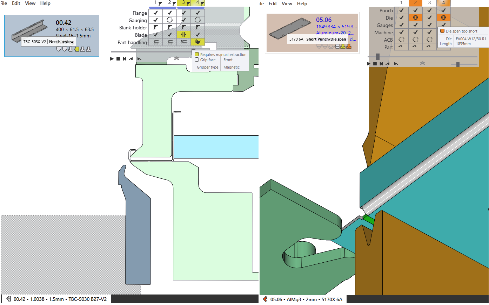

Teilevalidierung
CAD-Fehler
Nicht machbar (Biegen und Schneiden)
-
JFY Plus weist dem Teil den Status „Biegen nicht machbar“ zu, wenn beim automatischen Rüsten kein gültiges Biegeprogramm gefunden wird.
-
Wenn das Biegeprogramm [08.07] eine Warnung hat, die ignoriert wird, wird automatisch ein Schneidprogramm in Erwägung gezogen.
-
Das Teil wird in den Zustand „Schneiden nicht machbar“ versetzt, wenn kein ausführbares Schneidprogramm gefunden wird.
 === Materialfehler
- Material fehlt: Anfangs werden die aus dem Modell gelesene Dicke und das zugewiesene Material mit dem JFY Plus-Rohmaterial abgeglichen. Ist das gesuchte Material nicht vorhanden, wird die Fehlermeldung „Material fehlt“ zugewiesen.
- _Material not assigned: Wenn Modell kein Feld hat, dem ein Material zugeordnet ist, wird ihm die Meldung „Material nicht zugewiesen“ zugeordnet.
=== Materialfehler
- Material fehlt: Anfangs werden die aus dem Modell gelesene Dicke und das zugewiesene Material mit dem JFY Plus-Rohmaterial abgeglichen. Ist das gesuchte Material nicht vorhanden, wird die Fehlermeldung „Material fehlt“ zugewiesen.
- _Material not assigned: Wenn Modell kein Feld hat, dem ein Material zugeordnet ist, wird ihm die Meldung „Material nicht zugewiesen“ zugeordnet.
 === Geometriefehler
- Open contours detected: CAD hat eine offene Entität.
- Multiple outer contours detected: CAD hat mehrere geschlossene Schleifen.
=== Geometriefehler
- Open contours detected: CAD hat eine offene Entität.
- Multiple outer contours detected: CAD hat mehrere geschlossene Schleifen.
 - Entstehend: Beim Laden eines Teil aus einer csv- oder xlsx-Tabelle wird für fehlende CAD-Dateien der Fehler „Entstehendes Teil“ erstellt.
- Geometry missing: CAD hat keine gültige Geometrie oder ist nicht verfügbar.
- Entstehend: Beim Laden eines Teil aus einer csv- oder xlsx-Tabelle wird für fehlende CAD-Dateien der Fehler „Entstehendes Teil“ erstellt.
- Geometry missing: CAD hat keine gültige Geometrie oder ist nicht verfügbar.
 == CAM-Fehler
=== Rüstfehler für Biegevorgänge
== CAM-Fehler
=== Rüstfehler für Biegevorgänge
Im Folgenden sind die Rüstfehler für Biegevorgänge aufgeführt.
-
Collisions detected und Gripper error.
 - Werkzeug Overload error und Durchbruch in der Nähe der Biegelinie.
- Werkzeug Overload error und Durchbruch in der Nähe der Biegelinie.
 - Needs review und Matrizen-Stempel-Abstand kurz.
- Needs review und Matrizen-Stempel-Abstand kurz.
 - Tool missing, Poor backguage, Teil zu groß für Maschine.
Im Folgenden sind die Rüstfehler für Schneidvorgänge aufgeführt.
-
Fehlende Schnittbedingung Rohmaterial nicht zugeordnet.
 - Stanzbutzenfehler: Beim Rüsten für einen Stanzvorgang ist der innere Kurvenzug ohne Verbindungen gerüstet.
- Untooled or partially tooled contours: Einige Segmente wurden beim Rüsten für den Stanzvorgang übersehen.
- Stanzbutzenfehler: Beim Rüsten für einen Stanzvorgang ist der innere Kurvenzug ohne Verbindungen gerüstet.
- Untooled or partially tooled contours: Einige Segmente wurden beim Rüsten für den Stanzvorgang übersehen.